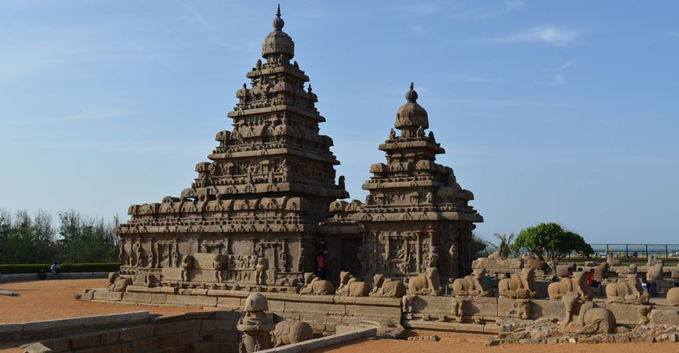
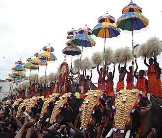
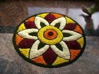

I born and brought up in Tamilnadu, southern part of India. I did my Masters in Chennai. Chennai is the capital of Tamil Nadu(India). Located on the Coromandel Coast off the Bay of Bengal,
it is the biggest cultural, economic and educational centre of south India.
The region around Chennai has served as an important administrative, military, and economic centre
for many centuries. During the 1st century CE, a poet and weaver named Thiruvalluvar lived in the
town of Mylapore (a neighbourhood of present Chennai).From the 1st–12th century the region of
present Tamil Nadu and parts of South India was ruled by the Cholas.The Pallavas of Kanchi built the areas of Mahabalipuram and Pallavaram during the reign of Mahendravarman.
They also defeated several kingdoms including the Cheras, Cholas and Pandyas who ruled over the area before
their arrival. Sculpted caves and paintings have been identified from that period

Mahabalipuram,Chennai
Delhi
I went to New Delhi during my college trip. Delhi is the capital of India. Delhi is the second-wealthiest city in India after Mumbai. The area around Delhi was probably inhabited before the second millennium BCE and there is evidence of continuous inhabitation since at least the 6th century BCE. The city is believed to be the site of Indraprastha, the legendary capital of the Pandavas in the Indian epic Mahabharata. According to the Mahabharata, this land was initially a huge mass of forests called 'Khandavaprastha' which was burnt down to build the city of Indraprastha. The earliest architectural relics date back to the Maurya period (c. 300 BCE); in 1966, an inscription of the Mauryan Emperor Ashoka (273–235 BCE) was discovered near Srinivaspuri.
TajMahal
Kerala
After marriage, with my husband I went to Kerala. Kerala is a state on the southwestern Malabar Coast of India. In the 15th century, the spice trade attracted Portuguese traders to Kerala, and paved the way for European colonisation of India. At the time of Indian independence movement in the early 20th century, there were two major princely states in Kerala-Travancore State and the Kingdom of Cochin.In the 15th century, the spice trade attracted Portuguese traders to Kerala, and paved the way for European colonisation of India. At the time of Indian independence movement in the early 20th century, there were two major princely states in Kerala-Travancore State and the Kingdom of Cochin. Onam is a harvest festival celebrated by the people of Kerala and is reminiscent of the state's agrarian past.[410][411] It is a local festival of Kerala[412] consisting of a four-day public holidays.Kerala is home to a number of performance arts. These include five classical dance forms: Kathakali, Mohiniyattam, Koodiyattom, Thullal and Krishnanattam, which originated and developed in the temple theatres during the classical period under the patronage of royal houses


USA
Due to my husband's work we moved to United States. Then we visited, Connecticut, NewYork, NewJersey, Boston, Niagara, Chicago, Indianapolis, Smokey Mountain, Texas and finally we got settled in great StLouis.